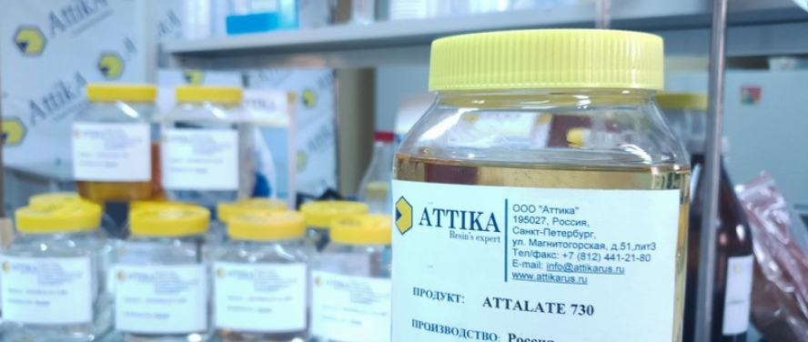
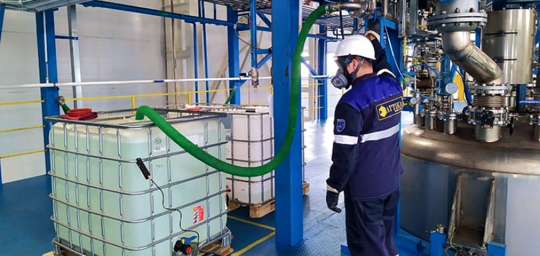

Ru

Полиэфирная смола: свойства, виды, применение
АВТОР polimer
на чтение 15 минут
Полиэфирные смолы — самый универсальный синтетический полимер. Наиболее широко используемый тип смол в морской и автомобильной промышленности. Занимает около 75% рынка стекловолоконных композитов и лакокрасочной продукции.
Полиэфирная смола — что это?
Это полимер. Экономичный, простой в использовании. Является основным компонентом во многих рыночных отраслях, от строительной до аэрокосмической. Сравнительно дешёвая на фоне эпоксидных смол и уретанов, но во многих случаях показывает аналогичные или превосходящие характеристики.
Преимущество полиэфирной смолы перед другими — баланс цены и функциональных характеристик (механических, химических, электрических).
Срок хранения полиэфиров ограничен одним годом. При длительном хранении смола желтеет и превращается в гель. Но процесс желатинизации можно замедлить, добавляя специальные ингибиторы.
Свойства и характеристики
Большинство полиэфирных смол — прозрачные вязкие жидкости, раствор полиэфира в стироле (или других мономерах). Стирола занимает до 35-50% объёма. Снижает вязкость смолы, делая её текучей, пригодной для литья или нанесения на поверхность кисточкой/валиком.

В чистом виде инертная. Реакцию запускает катализатор — химический отвердитель для полиэфирной смолы
| Свойства | Единицы |
|---|---|
| Температура расплава | До 260°С |
| Прочность на растяжение (30% армирование волокном) | 152 МПа |
| Прочность на изгиб (30% армирование волокном) | 110 МПа |
| Скорость усадки | 0,1-0,3% |
| Удельный вес | 1,56 |
| Усадка при отверждении | 4-8% |
Свойства, показанные в таблице — обобщённые. Используя различные добавки, каждый отдельный производитель получает собственный продукт с уникальным набором свойств.
Производство полиэфирных смол
Полимерные смолы получают промышленным методом конденсации. Поэтому другое их название — конденсационные полимеры. Есть несколько типов химических реакций, способных дать нужный результат. На современных производствах в основном используют такой набор реагентов:
- гликоли (например, этиленгликоль)
- кислоты (фталевая или малеиновая)
Побочный продукт изготовления полиэфирной смолы — вода или метанол. Сторонние летучие жидкости постепенно удаляют, пока на дне реакторов не осядет чистая жидкая смола.
На рынке чаще всего встречаются полиэфирные смолы двух составов:
- ортофталевая (орто);
- изофталевая (изо).
Ортофталевые смолы состоят в основном из ортофталевой кислоты и занимают низший ценовой сегмент. Содержат 35-45% стирола. Используется там, где нет повышенных требований к жаропрочности, коррозионной стойкости или механической прочности.
На изофталевой основе получается термостойкая конструкционная полиэфирная смола с содержанием стирола до 42-50%. Занимает средний и премиальный сегмент. Стойкая к коррозии, жаропрочная. Максимальная температура полиэфирной смолы такого типа — до 150-240 °C
Преимущества и недостатки
Полиэфирная смола — наиболее используемый полимер в промышленности. В основном из-за сравнительно невысокой стоимости и простой технологии получения.
Важный момент: в отличие от эпоксидных, виниловых и уретановых, большинство полиэфирных смол при отверждении создают липкую поверхность. Это обеспечивает сильную адгезию между слоями с последующим их «холодным» сшиванием на молекулярном уровне.Это огромный плюс в таких процессах, как ламинирование или когда требуется заливка в несколько подходов. Слои между заливками не нужно шлифовать или вскрывать грунтом. По этой же причине, производство композитов тоже упрощается. Стекломат и полиэфирная смола созданы друг для друга. Даже более дорогие уретаны и эпоксидка не могут заменить её в судостроении, автомобильной и других отраслях промышленности.
Общие преимущества полиэфирной смолы:
- недорогая;
- умеренно влагостойкая;
- химически инертная;
- устойчивая к ультрафиолету;
- не стареет;
- выдерживают температуру 80-240 °C;
- хорошо держит армирующий материал.
Еще одно важное преимущество полиэфирной смолы — предсказуемая скорость отверждения. Этот параметр регулируется количеством катализатора в составе. Позволяет реализовывать крупные проекты (например, лодки, яхты) не боясь, что смола высохнет быстрее, чем будет нанесён армирующий слой.
Теперь о недостатках.
Общие недостатки полиэфирной смолы:
- исsпаряет вредный стирол;
- труднее смешивать, чем другие смолы — требует более точного расчёта количества катализатора;
- надёжно склеивает не все виды оснований;
- прочность сцепления с базовой поверхностью ниже, чем у эпоксидной смолы;
- более склонна к микротрещинам, чем эпоксидная смола.
Важно! Использовать полиэфирную смолу можно только в просторных, хорошо проветриваемых помещениях. В ином случае нужны респираторы с фильтром, чтобы защитить глаза и органы дыхания. Также рекомендуется носить перчатки и спецодежду, чтобы избежать контакта с кожей.
Инструкция по применению
Теперь, когда вы ознакомились с характеристиками и свойствами смолы, нужно научиться правильно её применять.Перед использованием смолу нужно смешать с отвердителем в определённой пропорции, чтобы получить нужную консистенцию и контролируемое время отверждения. На упаковке указано, в каких пропорциях мешать и сколько сохнет полиэфирная смола в зависимости от объёма и способа нанесения.
Чтобы замешать смолу, действуйте по такому алгоритму:
- налейте точное количество смолы, которое понадобится для работы, в пластиковый стаканчик;
- добавьте отвердитель, тщательно соблюдая пропорции, и перемешайте палочкой (сколько лить отвердителя, читайте в инструкции);
- нанесите смолу на заготовку/залейте в форму;
- дайте ей высохнуть в течение периода времени, рекомендованного производителем.
Средства защиты
Средства индивидуальной защиты:
Защита глаз. Очками с боковыми щитками, химические очки, лицевые щитки.
Перчатки. Выбираются для конкретной рабочей ситуации, меняются по мере износа.
Химически стойкая одежда. Для предотвращения контакта с кожей.
Респираторы. Могут потребоваться там, где есть повышенное содержание растворителей в воздухе, например, в условиях закрытого помещения без нормальной вентиляции.
Хранение
Правильное хранение обеспечит долгую счастливую жизнь вашей смолы. Вот несколько советов, как сохранить её пригодной для использования как можно дольше.
- Хранить в оригинальной упаковке в вертикальном положении.
- Держать в прохладном темном месте, защищать от прямых солнечных лучей.
- Избегать перепадов температуры, например, хранить в холодильнике, а не в гараже, на чердаке.
- Делать пометки с датой покупки/последнего использования.
- Храните смолу в герметичных ёмкостях, обматывая несколькими слоями полиэтилена.